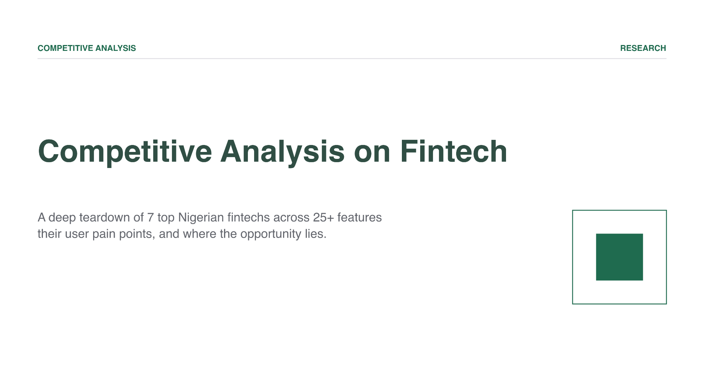

A deep teardown of seven Nigerian fintechs across 25+ feature dimensions, their feature gaps, user pain points, and where the opportunity in fintech lies.

Building product strategy at PocketApp meant understanding the competitive field we were in. I conducted a structured competitive analysis of seven leading consumer fintechs in Nigeria: Kuda, Palmpay, Opay, Moniepoint, Payday, Carbon, and PocketApp. Evaluating them across 25+ features, average store ratings, user pain points, and qualitative user sentiment.
At surface level, the Nigerian fintech space looked saturated. Most products offered similar core features: account management, transfers, bill payments, customer support, and biometric authentication. The real challenge was identifying where meaningful product gaps existed, and how to differentiate in a highly regulated and fast-moving market.
I evaluated each product across core areas such as, onboarding, KYC, P2P transfers, cards, bill payments, biometrics, and customer support, ensuring consistent scoring across all competitors.
I built insights by combining App Store and Play Store reviews, user-reported pain points, and internal customer support data from PocketApp.
Rather than listing feedback, I categorised pain points by type and severity, making them directly actionable for roadmap prioritisation.
Freelancers and SMBs were unserved. Most competitors had shifted toward either mass consumer or enterprise segments, leaving a clear gap in the middle market.
Money management tools were missing. While every player offered wallets and transactions, none meaningfully invested in financial literacy or true money management features.
Security was an underused trust lever. With several competitors experiencing public breaches, strong visible security at PocketApp represented a clear differentiation opportunity.
Emerging needs were unmet. Signals across user feedback consistently pointed to growing demand for multi-currency support and more robust bill payment experiences.
Feature parity is the baseline, not the strategy. Competing on core features alone wasn't enough; differentiation lived in the gaps no one had addressed yet.
Negative reviews are roadmap signals. User complaints about competitors surfaced some of the highest-quality insights for product opportunity mapping.
Strategic 'no' decisions need evidence. Trade-offs like whether to pursue lending required structured analysis to make focus decisions defensible.